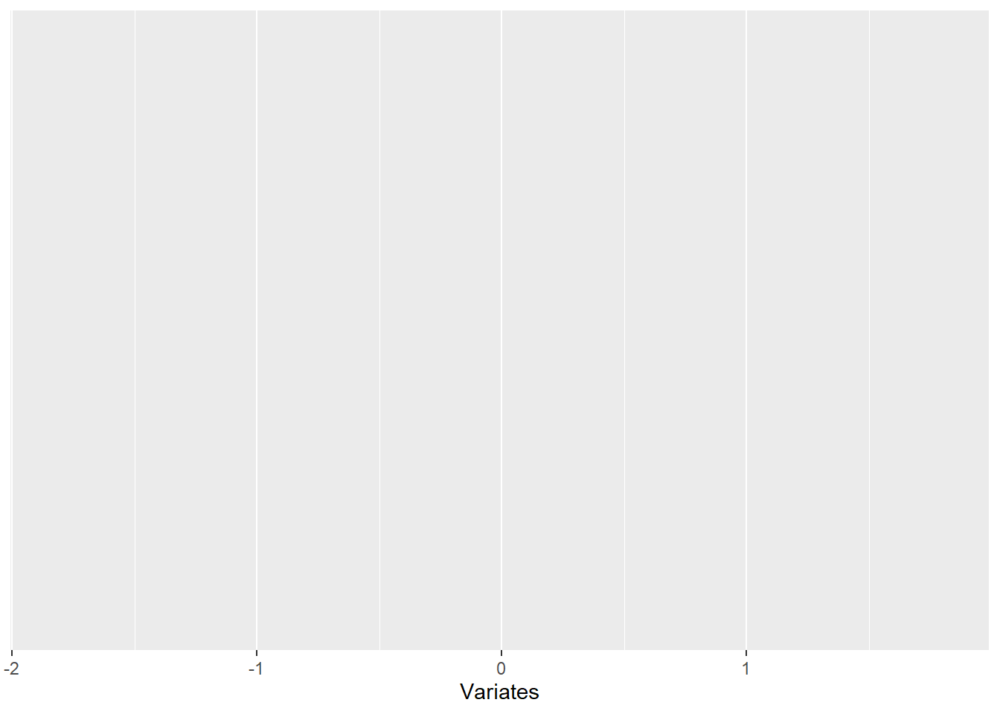
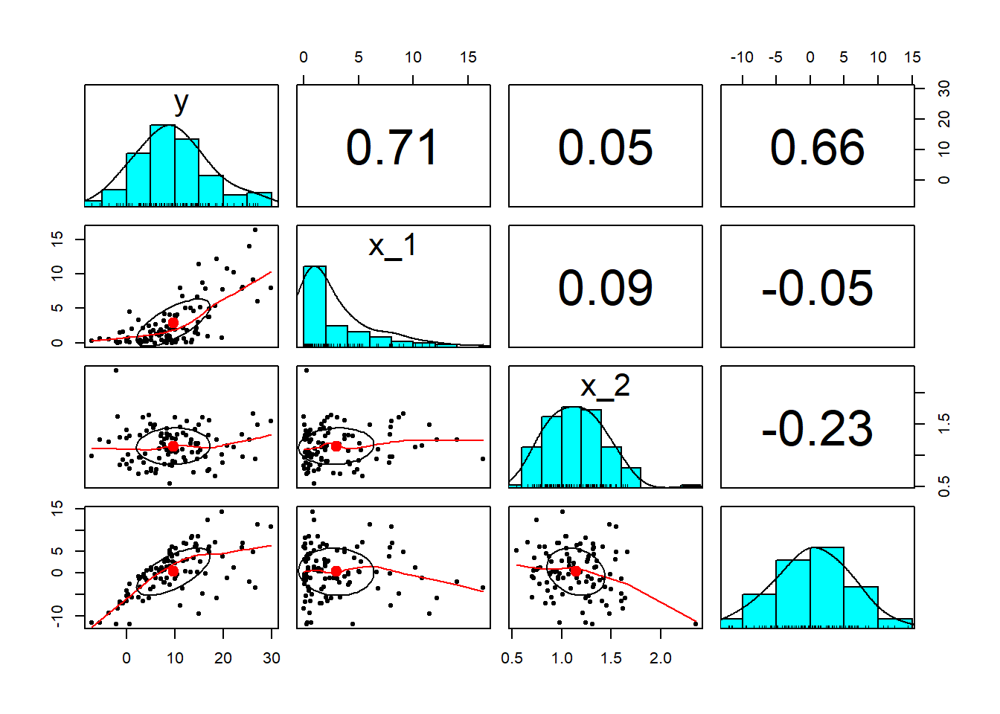

Chapter 4 Tickling the Ivories
In this chapter we will use the R console in RStudio to run through the basic syntax of R. But that’s not all: we will also use R’s innate ability to implement linear algebra to build the basic statistics of ordinary least squares (OLS) regression.
4.1 Start to tickle
Or if you paint and draw, the 2-minute pose will warm you up. In the RStudio console panel (in the NW pane of my IDE) play with these by typing these statements at the > symbol:
## [1] 2 3 4 5 6This will produce a vector from 2 to 6.
We can use alt- (hold alt and hyphen keys down simultaneously) to produce <-, and assign data to an new object. This is a from R’s predecessor James Chamber’s S (ATT Bell Labs) that was ported from the single keystroke \(\leftarrow\) in Ken Iverson’s APL (IBM), where it is reserved as a binary logical operator. We can now also use = to assign variables in R. But, also a holdover from APL, we will continue to use = only for assignments within functions. [Glad we got that over!]
Now let’s try these expressions.
## [1] 20## [1] 720These actions assign the results of a calculation to a variable x and then sum and multiply the elements. x is stored in the active workspace. You can verify that by typing ls() in the console to list the objects in the workspace. Type in these statements as well.
## [1] "A.error" "A_col" "A_inner"
## [4] "A_inner_invert" "A_max" "A_min"
## [7] "A_result" "A_row" "A_sym"
## [10] "all" "argument" "beta_hat"
## [13] "C" "caption" "cashflow"
## [16] "check" "conclusion" "conjectures"
## [19] "d" "data_xy" "draw"
## [22] "e" "e_se" "e_sse"
## [25] "f" "fill" "fit"
## [28] "fit_0" "fit_1" "grid"
## [31] "hands" "hypotheses" "indicator"
## [34] "k" "kl_dyads" "kl_households"
## [37] "labels" "lik" "lines_1"
## [40] "lines_2" "logic_df" "major"
## [43] "minor" "move_over" "n"
## [46] "n.sim" "n_blue" "n_sim"
## [49] "n_white" "position" "posterior_hands"
## [52] "posterior_hands_raw" "posterior_shovels" "posterior_shovels_raw"
## [55] "postSample" "priors" "prob"
## [58] "prod" "pv.1" "pv.machine"
## [61] "pv.salvage" "r" "R"
## [64] "randomSample" "rates" "salvage"
## [67] "schools_dat" "shovels" "sum_column"
## [70] "sum_row" "t" "table_posteriors"
## [73] "table_priors" "trueMu" "trueSig"
## [76] "truth" "x" "X"
## [79] "x.char" "x_1" "x_2"
## [82] "x1" "XTX_inverse" "xy_df"
## [85] "xy_summary" "xy_tbl" "y"
## [88] "z"## [1] 5## [1] 2 3 4 5 6## [1] NA NA NA## [1] Inf Inf Inf Inf Inf Inf Inf Infx has length of 5 and we use that to index all of the current elements of x. Trying to access elements 6 to 8 produces na because they do not exist yet. Appending 7 to 9 will fill the spaces. Dividing by 0 produces inf.
## [1] 0 1 2 3 4 5 6 7## [1] 0 1 2 3 4 5 6 7## [1] Inf 3.0 2.0 1.7 1.5 1.4 1.3 1.3Putting parentheses around an expression is the same as printing out the result of the expression. Element-wise division (multiplication, addition, subtraction) produces inf as the first element.
4.2 Try this exercise
Suppose we have a gargleblaster machine that produces free cash flows of $10 million each year for 8 years. The machine will be scrapped and currently you believe you can get $5 million at the end of year 8 as salvage value. The forward curve of interest rates for the next 1 to 8 years is 0.06, 0.07, 0.05, 0.09, 0.09, 0.08, 0.08, 0.08.
- What is the value of $1 received at the end of each of the next 8 years? Use this script to begin the modeling process. Describe each calculation.
rates <- c(0.06, 0.07, 0.05, 0.09, 0.09,
0.08, 0.08, 0.08)
t <- seq(1, 8)
(pv.1 <- sum(1/(1 + rates)^t))What is the present value of salvage? Salvage would be at element 8 of an 8-element cash flow vector, and thus would use the eighth forward rate,
rate[8], andtwould be 8 as well. Eliminate the sum in the above script. Make a variable calledsalvageand assign salvage value to this variable. Use this variable in place of the1in the above script forpv.1. Call the new present valuepv.salvage.What is the present value of the gargleblaster machine? Type in these statements. The
repfunction makes an8element cash flow vector. We change the value of the 8th element of the cash flow vector to include salvage. Now use thepv.1statement above and substitutecashflowfor1. You will have your result.
Some results follow. The present value of $1 is
The present value of a $1 is this mathemetical formula.
\[
PV = \sum_{t=1}^{8}\frac{1}{(1+r)^t}
\]
This mathematical expression can be translated into R this way
## [1] 0.94 0.87 0.86 0.71 0.65 0.63 0.58 0.54## [1] 5.8We define rates as a vector using the c() concatenation function. We then define a sequence of 8 time indices t starting with 1. The present value of a $1 is sum of the vector element-by-element calculation of the date by date discounts \(1/(1+r)^t\).
The present value of salvage is the discounted salvage that is expected to occur at, and in this illustration only at, year 8.
\[
PV_{salvage} = \frac{salvage}{(1+r)^8}
\]
Translated into R we have
## [1] 2.7The present value of the gargleblaster machine is the present value of cashflows from operations from year 1 to year 8 plus the present value of salvage received in year 8. Salvage by definition is realized at the of the life of the operational cashflows upon disposition of the asset, here at year 8.
\[
PV_{total} = \sum_{t=1}^{8}\frac{cashflow_t}{(1+r)^t} + \frac{salvage}{(1+r)^8}
\]
This expression translates into R this way:
cashflow <- rep(10, 8)
cashflow[8] <- cashflow[8] + salvage
(pv.machine <- sum(cashflow/(1 + rates)^t))## [1] 61The rep or “repeat” function creates cash flows of $10 for each of 8 years. We adjust the year 8 cash flow to reflect salvage so that \(cashflow_8 = 10 + salvage\). The [8] indexes the eighth element of the cashflow vector.
4.3 Building Some Character
Let’s type these expressions into the console at the > prompt:
x[length(x) + 1] <- "end"
x[length(x) + 1] <- "end"
x.char <- x[-length(x)]
x <- as.numeric(x.char[-length(x.char)])
str(x)## num [1:8] 2 3 4 5 6 7 8 9We have appended the string “end” to the end of x, twice.
- We use the
-negative operator to eliminate it. - By inserting a string of characters into a numeric vector we have forced
Rto transform all numerical values to characters. - To keep things straight we called the character version
x.char. - In the end we convert
x.charback to numbers that we check with thestr(ucture) function.
We will use this procedure to build data tables (we will call these “data frames”) when comparing distributions of variables such as stock returns.
Here’s a useful set of statements for coding and classifying variables. Type these statements into the console.
We did a lot of R here. First, we set a random seed to reproduce the same results every time we run this simulaton. Then, we store the number of simulations in n.sim and produced two new variables with normal and a weirder looking distribution (a Student’s t distribution?). Invoking help will display help with distributions in the console pane of the RStudio IDE.
Now let’s try to display some of this interesting, and if surprising, information. The next code block will set up some presentation layer data for a plot.
z <- c(x, y)
indicator <- rep(c("normal", "abnormal"),
each = length(x))
xy_df <- data.frame(Variates = z, Distributions = indicator)We concatenate the two variables into a new variable z. We built into the variable indicator the classifier to indicate which is x and which is y. But let’s visualize what we want. (Paint in words here.) We want a column the first n.sim elements of which are x and the second are y. We then want a column the first n.sim elements of which are indicated by the character string “normal”, and the second n.sim elements by “abnormal”.
The rep function replicates the concatenation of “normal” and “abnormal” 10 times (the length(x)). The each feature concatenates 10 replications of “normal” to 10 replications of “abnormal”. We concatenate the variates into xy with the c() function.
Data frames are just column and row tables. Enter str(xy_df) to see what the structure of the xy_df data frame contains. In later work we will use a streamlined version of the data frame called a tibble in the tidyverse ecosystem.
We can see the first 5 components of the data frame components using the $ subsetting notation as below.
## 'data.frame': 20 obs. of 2 variables:
## $ Variates : num 0.777 1.373 1.303 0.148 -1.825 ...
## $ Distributions: chr "normal" "normal" "normal" "normal" ...## [1] 0.78 1.37 1.30 0.15 -1.83## [1] "normal" "normal" "normal" "normal" "normal"The str call returns the two vectors inside of xy. One is numeric and the other is a “factor” with two levels. R and many of the routines in R will interpret these as zeros and ones in developing indicator and dummy variables for regressions and filtering. The head() (and there is a tail() too) function displays as many components as you wish to see starting with row 1.
4.4 The plot thickens
We will want to see our handiwork, so load the ggplot2 library using install.packages("ggplot2").17
This plotting package requires data frames. A “data frame” simply put is a list of vectors and arrays with names. An example of a data frame in Excel is just the worksheet. There are columns with names in the first row, followed by several rows of data in each column. If you were to install the tidyverse package and load the package with library(tidyverse) you could use tibble() instead of the bas R data.frame().
Here we have defined a data frame xy_df. All of the x and y variates are put into one part of the frame, and the distribution indicator into another. For all of this to work in a plot the two arrays must be of the same length. Thus we use the common n.sim and length(x) to insure this when we computed the series. We always examine the data, here using the head and tail functions.
Type help(ggplot) into the console for details. The ggplot2 graphics package embodies Hadley Wickham’s “grammar of graphics” we can review at http://ggplot2.org. Hadley Wickham has a very useful presentation with numerous examples at http://ggplot2.org/resources/2007-past-present-future.pdf.
As mentioned above, the package uses data frames to process graphics. A lot of packages other than ggplot2, including the base stats package, require data
frames.
We load the library first. The next statement sets up the blank but all too ready canvas (it will be empty!) on which a density plot can be rendered.

The data frame name xy_df is first followed by the aesthetics mapping of data. The next statement inserts a geometrical element, here a density curve, which has a transparency parameter aesthetic alpha.

4.4.1 Try this example
Zoom in with xlim and lower x-axis and upper x-axis limits using the following statement:

Now we are getting to extreme value statistics by visualizing the tail of this distribution.
4.5 Arrays and You
Arrays have rows and columns and are akin to tables. All of Excel’s worksheets are organized into cells that are tables with columns and rows. Data frames are more akin to tables in data bases. Here are some simple matrix arrays and functions. We start by making a mistake:
## [,1] [,2] [,3] [,4]
## [1,] 1 4 7 10
## [2,] 2 5 8 11
## [3,] 3 6 9 1The matrix() function takes as input here the sequence of numbers from 1 to 11. It then tries to put these 11 elements into a 4 column array with 3 rows. It is missing a number as the error points out. To make a 4 column array out of 11 numbers it needs a twelth number to complete the third row. We then type in these statements
## [,1] [,2] [,3] [,4]
## [1,] 1 4 7 10
## [2,] 2 5 8 11
## [3,] 3 6 9 12## [,1] [,2] [,3] [,4]
## [1,] 1 4 7 10
## [2,] 2 5 8 11
## [3,] 3 6 9 12In A we take 12 integers in a row and specify they be organized into 4 columns, and in R this is by row. In the next statement we see that A_col and column binding cbind() are equivalent.
## [,1] [,2] [,3] [,4]
## [1,] 1 2 3 4
## [2,] 5 6 7 8
## [3,] 9 10 11 12## [,1] [,2] [,3] [,4]
## [1,] 1 4 7 10
## [2,] 2 5 8 11
## [3,] 3 6 9 12## [,1] [,2] [,3] [,4]
## [1,] TRUE TRUE TRUE TRUE
## [2,] TRUE TRUE TRUE TRUE
## [3,] TRUE TRUE TRUE TRUEUsing the outer product allows us to operate on matrix elements, first picking the minimum, then the maximum of each row. The pmin and pmax compare rows element by element. If you used min and max you would get the minimum and maximum of the whole matrix.
## [,1] [,2] [,3] [,4]
## [1,] 0.75 0.75 0.75 0.75
## [2,] 0.75 1.00 1.00 1.00
## [3,] 0.75 1.00 1.25 1.25
## [4,] 0.75 1.00 1.25 1.50## [,1] [,2] [,3] [,4]
## [1,] 0.75 1.0 1.2 1.5
## [2,] 1.00 1.0 1.2 1.5
## [3,] 1.25 1.2 1.2 1.5
## [4,] 1.50 1.5 1.5 1.5We build a symmetrical matrix and replace the diagonal with 1. A_sym looks like a correlation matrix. Here all we were doing is playing with shaping data.
## [,1] [,2] [,3] [,4]
## [1,] -0.50 -0.25 0.00 0.25
## [2,] -0.25 -0.50 -0.25 0.00
## [3,] 0.00 -0.25 -0.50 -0.25
## [4,] 0.25 0.00 -0.25 -0.50## [,1] [,2] [,3] [,4]
## [1,] 1.00 -0.25 0.00 0.25
## [2,] -0.25 1.00 -0.25 0.00
## [3,] 0.00 -0.25 1.00 -0.25
## [4,] 0.25 0.00 -0.25 1.004.5.1 Try this exercise
The inner product %*% cross-multiplies successive elements of a row with the successive elements of a column. If there are two rows with 5 columns, there must be a matrix at least with 1 column that has 5 rows in it.
Let’s run these statements.


rgamma allows us to generate n_sim versions of the gamma distribution with scale parameter 0.5 and shape parameter 0.2. rlnorm is a popular financial return distribution with mean 0.15 and standard deviation 0.25. We can call up ??distributions to get detailed information. Let’s plot the histograms of each simulated random variate using hist().
The cbind function binds into matrix columns the row arrays x_1 and x_2. These might be simulations of operational and financial losses. The X matrix could look like the design matrix for a regression.
Let’s simulate a response vector, say equity, and call it y and look at its histogram.
Now we have a frequentist statistical model for \(y\):
\[ y = X \beta + \varepsilon \]
where \(y\) is a 100 \(\times\) 1 (rows \(\times\) columns) vector, \(X\) is a 100 \(\times\) 2 matrix, \(\beta\) is a 2 \(\times\) 1 vector, and \(\epsilon\) is a 100 \(\times\) 1 vector of disturbances (a.k.a., “errors”).
Multiplying out the matrix term \(X \beta\) we have
\[ y = \beta_1 x_1 + \beta_2 x_2 + \varepsilon \]
where \(y\), \(x_1\), \(x_2\), and \(\varepsilon\) are all vectors with 100 rows for simulated observations.
If we look for \(\beta\) to minimize the sum of squared \(\varepsilon\) we would find that the solution is
\[ \hat{\beta} = (X^T X)^{-1} X^{T} y. \]
Where \(\hat{\beta}\) is read as “beta hat”.
The result \(y\) with its hist() is

The rubber meets the road here as we compute \(\hat{\beta}\).
## [,1]
## x_1 1.6
## x_2 4.0The beta_hat coefficients are much different than our model for y. Why? Because of the innovation, error, disturbance term rnorm(n_sim, 1, 2) we added to the 1.5*x_1 + 0.8 * x_2 terms.
Now for the estimated \(\varepsilon\) where we use the matrix inner product %*%. We need to be sure to pre-multiply beta_hat with X!

We see that the “residuals” are almost centered at 0.
4.5.2 More about residuals
For no charge at all let’s calculate the sum of squared errors in matrix talk, along with the number of obervations n and degrees of freedom n - k, all to get the standard error of the regression e_se. Mathematically we are computing
\[ \sigma_{\varepsilon} = \sqrt{\sum_{i=1}^N \frac{\varepsilon_i^2}{n-k}} \]
## [,1]
## [1,] 3021## [1] 100## [1] 2## [,1]
## [1,] 5.6The statement dim(X)[1] returns the first of two dimensions of the matrix X. The R system has a built in OLS model called lm() (for linear model). Here is that model and a summary() of results.
library(tidyverse)
data_xy <- tibble(x_1 = x_1, x_2 = x_2,
y = y)
fit_0 <- lm(y ~ x_1 + x_2 - 1, data = data_xy)
summary(fit_0)##
## Call:
## lm(formula = y ~ x_1 + x_2 - 1, data = data_xy)
##
## Residuals:
## Min 1Q Median 3Q Max
## -12.015 -3.200 0.366 4.333 14.347
##
## Coefficients:
## Estimate Std. Error t value Pr(>|t|)
## x_1 1.607 0.161 9.97 < 0.0000000000000002 ***
## x_2 4.042 0.616 6.56 0.0000000026 ***
## ---
## Signif. codes: 0 '***' 0.001 '**' 0.01 '*' 0.05 '.' 0.1 ' ' 1
##
## Residual standard error: 5.5 on 98 degrees of freedom
## Multiple R-squared: 0.799, Adjusted R-squared: 0.795
## F-statistic: 195 on 2 and 98 DF, p-value: <0.0000000000000002First we load the tidyverse package and make a tibble data set. Then we use the statistical model y ~ x_1 + x_2 - 1 The lm() function parses this formula into the dependent variable y, the two independent variables x_1 and x_2, and -1 for a zero intercept all referring to the components of the data set in the lm() function. We then can view the statistics of the regression using the summary() method associated with lm(). All results are in the object fit_0.
Of course we must try our model with an intercept, the default in lm(). I usually put the 1 + into the formula as a reminder.
##
## Call:
## lm(formula = y ~ 1 + x_1 + x_2, data = data_xy)
##
## Residuals:
## Min 1Q Median 3Q Max
## -12.768 -3.148 -0.674 3.700 13.362
##
## Coefficients:
## Estimate Std. Error t value Pr(>|t|)
## (Intercept) 5.313 2.221 2.39 0.019 *
## x_1 1.559 0.159 9.82 0.00000000000000033 ***
## x_2 -0.200 1.873 -0.11 0.915
## ---
## Signif. codes: 0 '***' 0.001 '**' 0.01 '*' 0.05 '.' 0.1 ' ' 1
##
## Residual standard error: 5.4 on 97 degrees of freedom
## Multiple R-squared: 0.5, Adjusted R-squared: 0.489
## F-statistic: 48.5 on 2 and 97 DF, p-value: 0.00000000000000257We see a very different story where the coefficient of the x_2 variable changes sign. In future sagas we will bury \(R^2\).
The lm() function is thew orkhorse of R regression in the frequentist statistical tradition of Joseph Venn and R.A. Fisher (1925).18
We also notice the layout of the writing of the function and its arguments. This tremendously aids comprehension as well as shooting trouble when running the functions.
Finally, again for no charge at all, lets load library psych (use install.packages("psych") as needed). We will use pairs.panels() for a pretty picture of our work in this try out. First column bind cbind() the y, X, and e arrays to create a data frame for pairs.panel().
We then invoke the pairs.panels() function using the all array we just created. The result is a scatterplot matrix with histograms of each variate down the diagonal. The lower triangle of the matrix is populated with scatterplots. The upper triangle of the matrix has correlations depicted with increasing font sizes for higher correlations.
 We will use this sort of tool again and again to explore the multivariate relationships among our data. Even better displays are available with the
4.6 More Array Work
We show off some more array operations in the following statements.
## [1] 4## [1] 4## [1] 4 4We calculate the number of rows and columns first. We then see that these exactly correspond to the two element vector produced by dim. Next we enter these statements into the console.
## [1] 3.0 3.8 4.2 4.5## [1] 3.0 3.8 4.2 4.5## [1] 3.0 3.8 4.2 4.5## [1] 3.0 3.8 4.2 4.5We also calculate the sums of each row and each column. Alternatively we can use the apply function on the first dimension (rows) and then on the second dimension (columns) of the matrix. Some matrix multiplications follow below.
## [,1] [,2] [,3] [,4]
## [1,] 0.75 0.75 0.81 0.88
## [2,] 0.38 0.56 0.50 0.50
## [3,] 0.38 0.50 0.69 0.62
## [4,] 0.75 0.94 1.12 1.38Starting from the inner circle of embedded parentheses we pull every row (the [,col] piece) for columns from the first to the second dimension of the dim() of A_min. We then transpose (row for column) the elements of A_min and cross left multiply in an inner product this transposed matrix with A_sym.
We have already deployed very useful matrix operation, the inverse. The R function solve() provides the answer to the question: what two matrices, when multiplied by one another, produces the identity matrix? The identity matrix is a matrix of all ones down the diagonal and zeros elsewhere.
## [,1] [,2] [,3] [,4]
## [1,] 4.95238095238095255 -3.0 -1.1 -1.5
## [2,] -2.28571428571428559 6.9 -2.3 0.0
## [3,] 0.00000000000000013 -2.3 6.9 -2.3
## [4,] -1.14285714285714302 -1.1 -3.4 3.4Now we use our inverse with the original matrix we inverted.
## [,1] [,2] [,3] [,4]
## [1,] 0.99999999999999978 0.00000000000000000 0.00000000000000000 0.00000000000000000
## [2,] 0.00000000000000022 1.00000000000000022 0.00000000000000000 0.00000000000000000
## [3,] 0.00000000000000011 0.00000000000000011 1.00000000000000000 0.00000000000000044
## [4,] 0.00000000000000022 -0.00000000000000044 -0.00000000000000089 1.00000000000000000When we cross multiply A_inner with its inverse, we should, and do, get the identity matrix that is a matrix of ones in the diagonal and zeros in the off-diagonal elements.
4.7 Summary
We covered very general data manipulation in R including arithmetical operations, vectors and matrices, their formation and operations, and data frames. We used data frames as inputs to plotting functions. We also built a matrix-based linear regression model and a present value calculator. This will be nearly the last time in this book we will employ frequentist statistical calculation. The next chapter will bring us to the brink of the statistical reasoning often called Bayesian. It is also nearly the last time we will seriously use the nouns and verbs of base R data wrangling. We will start next chapter to use modern data management nouns and verbs with the tidyverse package and ecosystem.
4.8 Further Reading
This introductory chapter covers material from Teetor, chapters 1, 2, 5, 6. Present value, salvage, and other valuation topics can be found in Brealey et al. under present value in the index of any of several editions.
4.9 Practice Sets
4.9.1 Purpose, Process, Product
These practice sets will repeat various R features in this chapter. Specifically we will practice defining vectors, matrices (arrays), and data frames and their use in present value, growth, future value calculations, We will build on this basic practice with the computation of ordinary lease squares coefficients and plots using ggplot2. We will summarize our findings in debrief documented with an R markdown file and output.
4.9.2 R Markdown set up
Open a new
R Markdownhtml document file and save it with file nameMYName-FIN654-PS01to your working directory. TheRmdfile extension will automatically be appended to the file name. Create a new folder calleddatain this working directory and deposit the.csvfile for practice set #2 to this directory.Modify the
YAMLheader in theRmdfile to reflect the name of this practice set, your name, and date.Replace the
R Markdownexample in the new file with the following script.
## Practice set 1: present value
(INSERT results here)
## Practice set 2: regression
(Insert results here)- Click
knitin theRstudiocommand bar to produce thehtmldocument.
4.9.3 Mutual Fund simulation
4.9.3.1 Problem
We work for a mutual fund that is legally required to fair value the stock of unlisted companies it owns. Your fund is about to purchase shares of InUrCorner, a U.S. based company, that provides internet-of-things legal services.
We sampled several companies with business plans similar to InUrCorner and find that the average weighted average cost of capital is 18%.
InUrCorner sales is $80 million and projected to growth at 50% per year for the next 3 years and 15% per year thereafter.
Cost of services provided as a percent of sales is currently 75% and projected to be flat for the foreseeable future.
Depreciation is also constant at 5% of net fixed assets (gross fixed asset minus accumulated depreciation), as are taxes (all-in) at 35% of taxable profits.
Discussions with InUrCorner management indicate that the company will need an increase in working capital at the rate of 15% each year and an increase in fixed assets at the rate of 10% of sales each year. Currently working capital is $10, net fixed assets is $90, and accumulated depreciation is $15.
4.9.3.2 Questions
- Let’s project
sales,cost, increments to net fixed assetsNFA, increments to working capitalWC,depreciation,tax, and free cash flowFCFfor the next 4 years. We will use a table to report the projection.
Let’s use this code to build and display a table.
# Form table of results
table.names <- c("Sales", "Cost", "Working Capital (incr.)",
"Net Fixed Assets (incr.)", "Free Cash Flow")
# Assign projection labels
table.year <- year # Assign projection years
table.data <- rbind(sales, cost, WC.incr,
NFA.incr, FCF) # Layer projections
rownames(table.data) <- table.names # Replace rows with projection labels
colnames(table.data) <- table.year # Replace columns with projection years
knitr::kable(table.data) # Display a readable table- Modify the assumptions by +/- 10% and report the results.
4.9.4 Healthcare provider admission rates
4.9.4.1 Problem
We work for a healthcare insurer and our management is interested in understanding the relationship between input admission and outpatient rates as drivers of expenses, payroll, and employment. We gathered a sample of 200 hospitals in a test market in this data set.
4.9.4.2 Questions
Build a table that explores this data set variable by variable and relationships among variables.
Investigate the influence of admission and outpatient rates on expenses and payroll. First, form these arrays.
Next, compute the regression coefficients.
Finally, compute the regression statistics.
- Use this code to investigate further the relationship among predicted expenses and the drivers, admissions and outpatients.
require(reshape2)
require(ggplot2)
actual <- y
predicted <- X %*% beta.hat
residual <- actual - predicted
results <- data.frame(actual = actual,
predicted = predicted, residual = residual)
# Insert comment here
min_xy <- min(min(results$actual), min(results$predicted))
max_xy <- max(max(results$actual), max(results$predicted))
# Insert comment here
plot.melt <- melt(results, id.vars = "predicted")
# Insert comment here
plot.data <- rbind(plot.melt, data.frame(predicted = c(min_xy,
max_xy), variable = c("actual", "actual"),
value = c(max_xy, min_xy)))
# Insert comment here
p <- ggplot(plot, aes(x = predicted,
y = value)) + geom_point(size = 2.5) +
theme_bw()
p <- p + facet_wrap(~variable, scales = "free")
p4.9.5 Practice Set Debrief
List the R skills needed to complete these practice labs.
What are the packages used to compute and graph results. Explain each of them.
How well did the results begin to answer the business questions posed at the beginning of each practice lab?
4.10 Project: Captive Financing
4.10.1 Purpose
This project will allow us to practice various R features using live data to support a decision regarding the provision of captive financing to customers at the beginning of this chapter. We will focus on translating regression statistics into R, plotting results, and interpreting ordinary least squares regression outcomes.
4.10.2 Problem
As we researched how to provide captive financing and insurance for our customers we found that we needed to understand the relationships among lending rates and various terms and conditions of typical equipment financing contracts.
We will focus on one question:
What is the influence of terms and conditions on the lending rate of fully committed commercial loans with maturities greater than one year?
4.10.3 Data
The data set commloan.csv contains data from the St. Louis Federal Reserve Bank’s FRED website we will use to get some high level insights. The quarterly data extends from the first quarter of 2003 to the second quarter of 2016 and aggregates a survey administered by the St. Louis Fed. There are several time series included. Each is by the time that pricing terms Were set and by commitment, with maturities more than 365 Days from a survey of all commercial banks. Here are the definitions.
4.10.4 Work Flow
- Prepare the data.
- Visit the FRED website. Include any information on the site to enhance the interpretation of results.
- Use
read.csvto read the data intoR. Be sure to set the project’s working directory where the data directory resides. Usena.omit()to clean the data.
# setwd('C:/Users/Bill
# Foote/bookdown/bookdown-demo-master')
# the project directory
x.data <- read.csv("data/commloans.csv")
x.data <- na.omit(x.data)Assign the data to a variable called
x.data. Examine the first and last 5 entries. Run asummaryof the data set.What anomalies appear based on these procedures?
- Explore the data.
- Let’s plot the time series data using this code:
require(ggplot2)
require(reshape2)
# Use melt() from reshape2 to build
# data frame with data as id and
# values of variables
x.melted <- melt(x.data[, c(1:4)], id = "date")
ggplot(data = x.melted, aes(x = date,
y = value)) + geom_point() + facet_wrap(~variable,
scales = "free_x")Describe the data frame that
melt()produces.Let’s load the
psychlibrary and produce a scatterplot matrix. Interpret this exploration.
- Analyze the data.
- Let’s regress
rateon the rest of the variables inx.data. To do this we form a matrix of independent variables (predictor or explanatory variables) in the matrixXand a separate vectoryfor the dependent (response) variablerate. We recall that the1vector will produce a constant intercept in the regression model.
y <- as.vector(x.data[, "rate"])
X <- as.matrix(cbind(1, x.data[, c("prepaypenalty",
"maturity", "size", "volume")]))
head(y)
head(X)Explain the code used to form
yandX.Calculate the \(\hat{\beta}\) coefficients and interpret their meaning.
Calculate actual and predicted
ratesand plot using this code.
# Insert comment here
require(reshape2)
require(ggplot2)
actual <- y
predicted <- X %*% beta.hat
residual <- actual - predicted
results <- data.frame(actual = actual,
predicted = predicted, residual = residual)
# Insert comment here
min_xy <- min(min(results$actual), min(results$predicted))
max_xy <- max(max(results$actual), max(results$predicted))
# Insert comment here
plot.melt <- melt(results, id.vars = "predicted")
# Insert comment here
plot.data <- rbind(plot.melt, data.frame(predicted = c(min_xy,
max_xy), variable = c("actual", "actual"),
value = c(max_xy, min_xy)))
# Insert comment here
p <- ggplot(plot, aes(x = predicted,
y = value)) + geom_point(size = 2.5) +
theme_bw()
p <- p + facet_wrap(~variable, scales = "free")
pInsert explanatory comments into the code chunk to document the work flow for this plot.
Interpret the graphs of actual and residual versus predicted values of
rate.Calculate the standard error of the residuals, Interpret its meaning.
References
Fisher, Ronald A. 1925. A Manual for Statistical Researchers.
Visit Hadley Wickham’s examples at http://ggplot2.org/.)↩
Fisher was a geneticist who espoused this approach which really did apply quite well to his field. Our field is that of human behavior in the business domain. Fisher’s approach might not always work for us there. He assumes effectively that the prior belief is uniformly distributed. More than that, his approach is to calculate averages, aggregations, of series of data, deviations (squared), of data, and so one. Then given the aggregation, simulate the aggregator. Our probabistic approach does not assume a prior belief. It goes on to simulate the range of possible, and logical, ways (hypotheses) that data can condition hypotheses about a parameter, and elicit a posterior response given a belief about the hypothesis. This approach solves for the parameter across a range of hypotheses conditional on beliefs and data. If our questions do not require this extent of analysis, then, so be it, we use Fisher’s ellipsis of an approach.↩